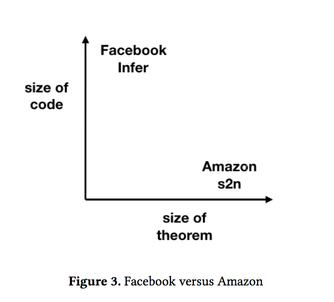

Continuous Reasoning
Table of Contents
This paper is all about Infer, Facebook's static analysis tool, and how they managed to make formal program analysis actually useful in the real world. The secret sauce? Something called continuous reasoning.
The Big Idea
The core insight here is pretty simple: instead of running massive formal verification tools that take forever and annoy everyone, why not integrate lightweight analysis directly into the development workflow? You know, where developers actually live - in code reviews, CI/CD pipelines, and all that.
Infer analyzes C, C++, Java, and Objective-C code (it's written in OCaml, if you care about that sort of thing). The killer feature is that it runs on code diffs rather than rebuilding your entire codebase from scratch. This means it finishes in the low tens of minutes instead of hours or days, which makes it actually usable for developers who want feedback during code reviews rather than finding out about bugs weeks later on some forgotten bug board.
How They Made It Fast: Automatic Composability
The reason Infer doesn't crawl to a halt on large codebases is something called Automatic Composability. Here's how the authors explain it:
The technical feature which enables Infer's diff-time deployment is compositionality. The idea of compositionality comes from language semantics: a semantics is compositional if the meaning of a complex phrase is defined in terms of the meanings of its parts and a means of combining them.
They took this idea from language theory and applied it to program analysis, calling it Compositional Analysis:
Compositional Analysis: an automatic program analysis is compositional if the analysis result of a composite program is defined in terms of the analysis results of its parts and a means of combining them.
Basically, instead of needing to understand your entire program at once, Infer can analyze pieces independently and then combine the results. This is what lets it work on just the changed parts of your code.
The ROFL Episode (Yes, That's What They Called It)
Here's my favorite part of the paper. Facebook initially deployed an earlier version of Infer as a batch job that ran overnight and dumped a bunch of bug reports. They called this *ROFL (Report Only Failure List)
Guess what happened? Developers completely ignored it. The tool found real bugs, but nobody fixed them. Why?
- Mental effort of context switching: Nobody wants to dive back into some random commit from last week to fix a bug
- Relevance: Figuring out which developer should fix which bug is actually pretty hard
The diff-based approach solves both problems. Instead of getting a random bug report for old code, you get feedback during code review for code you just wrote. Infer basically becomes another reviewer that happens to be really good at spotting memory safety issues.
The impact was huge once they got this right - tens of thousands of bugs reported by Infer actually got fixed.
Contrast with Traditional Approaches
The paper contrasts Infer with something like Amazon's s2n, which does full formal verification. S2n is incredibly thorough but doesn't scale to large codebases - it's more like having a team of mathematicians prove your crypto library is correct rather than catching everyday bugs in your web app.

Getting the Reporting Right
One thing the paper emphasizes is that when and what you report matters a lot. They break down different reporting strategies:
- Lean reporting: Only show new errors in changed files. This is Infer's default during code review. The philosophy is "Don't spam the developer" - if you didn't touch that code, you probably don't want to hear about its existing problems.
- Bulky reporting: Show everything, including pre-existing issues. This can be overwhelming on legacy codebases but sometimes makes sense for certain bug types.
- Cautious reporting: Used for periodic runs on the entire codebase. Companies like Coverity use this approach.
- Clean reporting: Keep the codebase completely free of certain issues. This is what Amazon does with s2n, and what you'd typically see with type systems.
The Bottom Line
Even though making automatic composability work is hard, the authors argue it's worth the effort because of how much better continuous analysis scales compared to traditional batch verification. Instead of formal methods being this academic thing that nobody uses, you can actually integrate them into real development workflows where they make a difference.
The key insight is that the best analysis tool isn't necessarily the most sophisticated one - it's the one that developers will actually use and respond to.